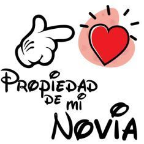
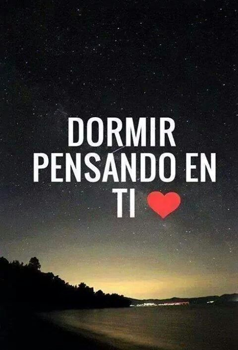

❀ Eres mi presente👫 y serás mi futuro👫
porque eres lo mejor que me ha pasado💑
lo mejor que me ha dado la vida👌
Cierro los ojos🙈 pienso 🤔 en ti 🧍♀️
sonrío🧑 e imagino una vida entera contigo🙆♂️👱♂️👱♀️
¡Creo que eso es estar enamorado!🥰😍
Gracias por hacer de mis días los más felices😁....
y hacer de este primer mes😊......
el más lleno de amor😍🥰....
Quiero que sepas.....
que te quiero más que ayer🥰....
pero menos que mañana😍.....

AMOR💘....
no imaginas que emoción me da al ver👀 en el calendario que día es hoy… ...
Gracias por todo lo que haces por mi👍....
somos dos personas hermosas que nos hemos encontrado en brainly ....
cada uno de diferentes caminos para un solo destino...

gracias por permitirme de estar a tu lado este primer mes.....
se que tuvimos pelas pero
.. lo mas importante es que seguimos
no sabes como se siento.....
todo quiero lograrlo junto ati


pero como te dije tambien estoy feliz y sabes por que....:)
porque cada dia cada minuto me enamoro mas de ti.....
mas de lo que yo me esperaba.....
mas de lo que me imaginaba.....
cada detalle tuyo hace que tu te claves aqui dentro de mi corazon mas y mas...
feliz porque se que eres una buena persona,
hermosa y preciosa mujer que me comprende...
aunque no lo sea asi yo lo creo que asi es .....
estoy feliz re feliz...
por todo el tiempo que vamos de novios...
todas las cosas que nos hallamos dicho va teniendo sentido....
va teniendo color..
estoy feliz por....
-enamorada.....amiga.....vicio....amiga con derechos
bebe espero te guste me siento inspirado me siento nostalgico al recordar todo lo que hablamos cuando nos conocimos
y no quiero que lo nuestro tenga fin...
no quiero que se quede aqui o aya.....
que se quede en la tumba

ahi que se quede nuestro amor.....
hasta creo que queriendote como te quiero....
hasta despues de muerto te seguire queriendo...
yo estoy aqui para quererte, cuidarte.....
por eso tu y yo nos cruzamos cada uno en la vida del otro...
para complementarnos como el mar y el sol...
como todo lo que se complementa.....
te quiero mucho mi 👉KIMBERLY👈